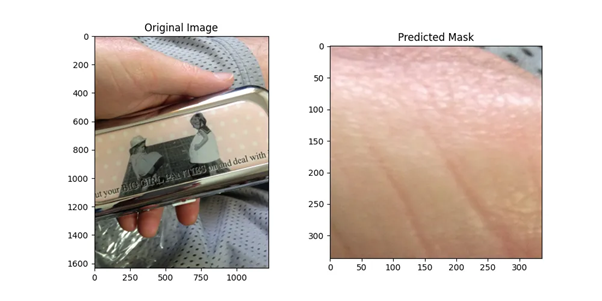
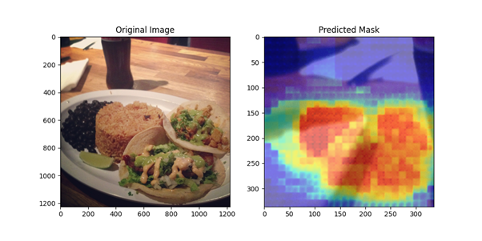
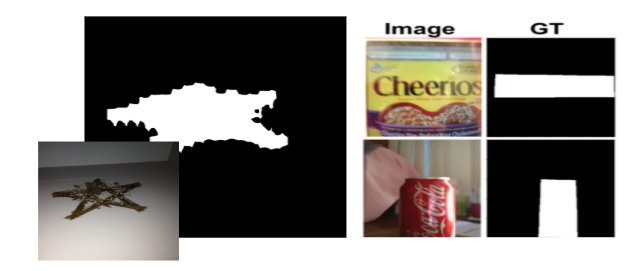

Limitation 1
ILimitation of Random Crop Preprocessing Without Considering Dataset Characteristics.
Limitation 2
Difficulty in Detecting Small and Edge-Located Objects.
Limitation 3
Limitation in Binary Conversion of Grounding Regions
MEMBERS
JIHEE YOON
I’m a master’s student in AI at the CVML Lab, Chung-Ang University. My research focuses at the intersection of vision, language, and generative AI. In this project, I took the lead on designing the model structure, analyzing failure cases, and driving the overall direction of the study — especially in articulating its limitations and what we learned from them.

SEUNGA LEE
I am currently studying in the Department of Computer Science and Engineering at Chung-Ang University, with interest in computer vision and backend engineering. In this project, I was responsible for data preprocessing and visualization, and also participated in experiments to improve model performance.
HAESOL JEONG
I'm currently majoring in Computer Science at Chung-Ang University. I'm interested in computer vision. I contributed to improving model performance by modifying the decoder architecture to a lightweight version. and took part in as an MLOps engineer, setting up an experiment version control system and a structured framework for logging intermediate results.